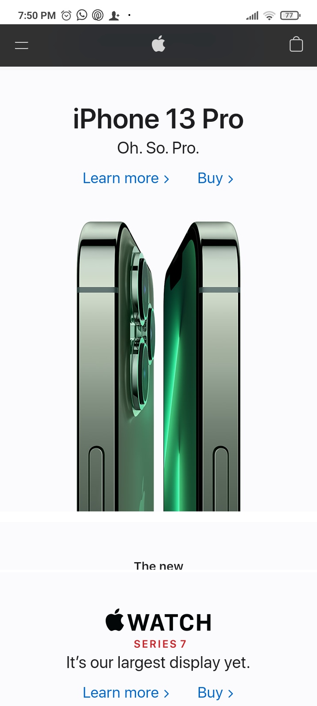

Visual Hierarchy
Discord
https://discord.comHere visual scale is used to create visual hierarchy, the title is bigger and wider and the second button is also bigger than the first one. The second button is higher in importance and is the one the company want their users to press since it is the button to download the app on their phones.
Whitespace and Clean Design
Apple
https://apple.com Apple does a fantastic job using whitespace correctly. There's enough space around the iPhone image and the ohter elements in the screen. There is something of a padding in the right and left side of the webpage and it makes the centered content stand out.
Rule of Thirds
Play Station
https://playstation.comHere the hero section covers 2/3 of the grid in the block axis and the slider section covers 1/3. The hero section stands out from the slider section since the main focus is in the image presented on the hero section.